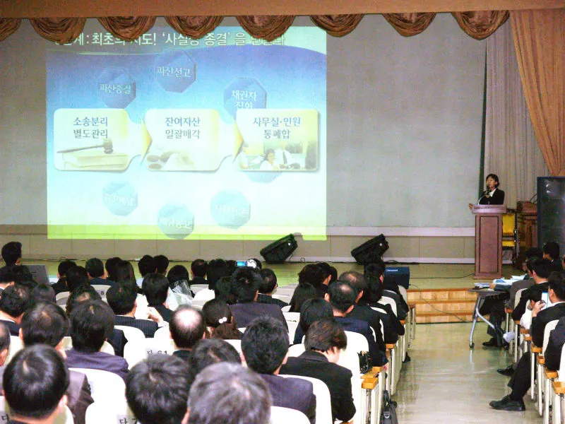

1번째 시기 · 장면 10개
1996–2004
위기와 함께 출범한 시절
1996년 출범하자마자 외환위기가 닥쳤습니다. 시장이 안정될 때까지 예금을 전액 보호해 불안을 가라앉혔고, 1998년에는 금융권별 기금을 하나로 묶어 공적자금을 지원하며 구조조정을 이끌었습니다. 연쇄 도산을 막아 낸 시기입니다.
2번째 시기 · 장면 15개
2005–2015
저축은행 정리에서 위험 관리 기관으로
외환위기 이후에도 저축은행의 부실은 이어졌습니다. 2011년 영업정지 사태에서는 구조조정 특별계정과 가교저축은행을 만들고, 금융거래를 끊지 않는 계약이전으로 불편을 줄였습니다. 이후 금융회사 조사 권한을 넓히고 2014년 차등예금보험료율제를 시행하며, 부실을 정리하는 기관에서 위험을 미리 살피는 기관으로 나아갔습니다.
3번째 시기 · 장면 18개
2016–2026
일상 가까이로 다가온 보호
관심은 국민의 일상으로 옮겨 왔습니다. 2021년 착오송금 반환지원제도를 자리 잡게 했고, 2025년에는 예금보호한도를 1억 원으로 올렸습니다. 대형 금융회사 부실 정리체계(RRP), 가상자산사업자 조사체계, 금융안정계정 도입 논의, 생애주기별 금융교육까지 더해 위기 대응 체계를 다듬고 있습니다.
다음 쪽
기념 인터뷰